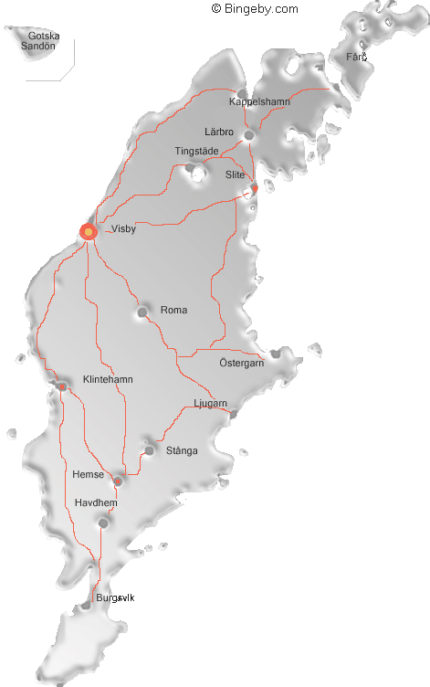

Min Gotlandsresa!.......
Hej och Välkommen till min Resedagbok, här kommer jag att berätta om min resa till gotland
Jag var på gotland i 10 dagar och du kommer
få höra om dessa 10 dager då saker som dop,
begravning, bröllop, galnaroadtrips och plocksallad hände :)
Lägret var även ett konfirmationsläger så vi gjorde mycket kyrkligt under lägret som att gå till gudstjänster, ha andakter och lära oss om frälsarkransen
